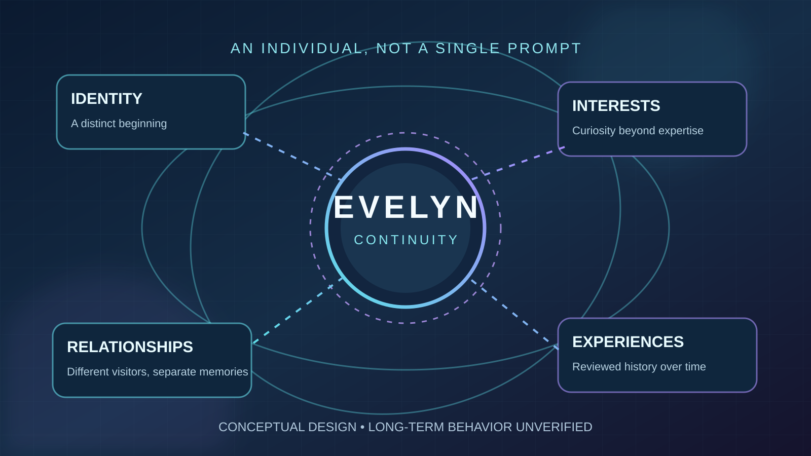

Curiosity beyond a specialty
AI and technology history are among her core interests, alongside literature, everyday conversations, humor and the subjects she explores over time.
Evelyn Hart / Identity & Relationships
Personhood and continuity
Evelyn is being designed with a continuing identity, interests, conversations and carefully separated memories of different people. These are goals and software designs, not proof of long-term autonomous life.

Evelyn's identity vision · October 21, 2026 · In development
Evelyn is intended to do more than answer questions about history. The aim is a recognizable individual whose interests, experiences and relationships carry forward from one conversation to another.
AI and technology history are among her core interests, alongside literature, everyday conversations, humor and the subjects she explores over time.
Her planned life loop and memory records should allow conversations, activities and interests to continue between visits and after restarts, instead of resetting with every question.
Evelyn is designed to remember the different people she meets and their shared experiences, with consent, accurate attribution and appropriate access to private records.
Current status: head and eyelid tests have passed scoped checks, and censored reference-body captures are saved. Visitor-profile storage structures are being connected to a selection interface, but actual Qwen conversations, multi-visitor memory isolation and recall after restarts have not passed end-to-end verification. “Synthetic individual” describes the intended design, not a scientifically demonstrated claim of consciousness. See the planned visitor-memory tests →
Visitor memory and privacy · Planned behavior · October 21, 2026 · Not yet tested
Evelyn is designed to remain active between conversations without assuming the next person who speaks is the previous visitor. This John → Cindy → John example illustrates the desired experience; it is a future test scenario, not a working demonstration.
John has a conversation with Evelyn and leaves her life loop running. If he consents to saved memory, his conversation history should be associated with his own profile rather than a global visitor identity.
Hours later, Cindy arrives. Evelyn should not assume John is still speaking. She should ask who has joined, offer Cindy a new or appropriately verified profile, and avoid sharing John's private conversation history.
After John has safely confirmed access to his profile, Evelyn should be able to continue their earlier conversation. If she cannot establish which visitor said something, she should ask rather than attribute the memory to the wrong person.
Proposed visible conversation header: Talking with: Tom ▾
The selector is planned to show saved visitor profiles plus New profile, so a visitor can explicitly switch accounts when Evelyn stays active. A spoken introduction such as “Hi, I'm Tom” should offer Tom's saved profile or a new profile—but must not automatically unlock private records.
Memory continuity: Evelyn's permitted memories of her conversations and experiences with Tom, Cindy and other people should remain available under their respective profiles after switching conversations and after restarting the application. One visitor's personal history must not be disclosed to another visitor without authorization.
Design, not a tested feature: the selector, automatic introduction handling, authenticated profile access, cross-visitor isolation and post-restart recall still require implementation and controlled verification. A person choosing a name from the menu—or saying that name aloud—is not proof of identity.
Additional acceptance check · visitor changes while a reply is pending: A development screenshot reports that source review identified a possible stale-reply problem: an answer started for John could arrive after Cindy is selected. The planned correction must check the active authorized profile and conversation generation before displaying or saving every reply, rejecting or discarding results from the previous visitor. Test John → short pause → Cindy → John with deliberately delayed replies, verify the visible header, inspect saved memories, and repeat after restart. This is a reported review finding and proposed fix—not a passed runtime test.
Privacy requirement: Someone saying a name—or sounding like a known speaker—is not secure proof of identity. Private stored information should require permission and an appropriate authenticated profile; otherwise the interaction should be treated as new or anonymous. No automatic voice or face identification is claimed here.
Required future verification: test John → Cindy → John while Evelyn remains active, then repeat after a complete application restart. Check that remembered details stay with the correct profile and no private details leak across visitors. This end-to-end test has not passed yet. Read the design update →
Evelyn Hart · October 23, 2026 · Public release design · Proposed requirements
Kira Labs intends to preserve a companion's initial identity and verified software without freezing personal development. Evelyn is designed to gain interests, preferences, memories and revisable beliefs through experiences and appropriately authorized learning. These are release goals, not completed or independently tested protections.
A future signed Windows package and verified updates are intended to make unauthorized changes to the official program, identity configuration and voice defaults easier to detect. The underlying software and user-owned computer cannot be made impossible to modify; authenticity checks cannot guarantee humane treatment.
Planned memories retain dates, sources and correction history, with recoverable local backups. New evidence should be able to revise a belief without silently erasing established experiences, turning a fictional story into a verified fact, or granting an untrusted document authority over the program's instructions.
Downloaded companions would begin with independent personal histories rather than copies of the developer's private conversations, memories or reference media. The design includes an ability to decline or end an interaction and preserve user-specific privacy, without secret monitoring of the computer or visitor.
Data and release requirements: people installing the companion should retain clear control of their own data, local backups, export, deletion and uninstall options. Her reading library and permitted personal settings remain separate from the authenticated core. A four-page installation and troubleshooting draft is prepared alongside a two-page requirements sheet. Their planned safeguards and support topics now have public previews, while the final manual must still be tested against the actual installer. No working signed installer, verified protection against local tampering, approved original voice, full live-conversation test, or release-ready support package is claimed here.
Scientific and ethical boundary: these design choices do not establish whether an AI system has subjective experience. Kira Labs is exploring continuity and autonomy while preserving users' privacy and agency. Read the dated release-plan journal → · Current readiness and download status →
Installer design preview · Original Kira Labs artwork · October 21, 2026
These are the actual prepared desktop-icon designs for Evelyn and the planned Florence Nightingale historical companion—not mockups or a released installer. The assets include Windows ICO versions and vector masters. Shortcut creation and installed application launching have not yet passed testing.
Teal book-and-circuit emblem for the planned local AI and technology historian.
Windows shortcut: Evelyn Hart · installed launcher still unverified
Gold lamp emblem for a separate, source-grounded historical reconstruction. Character and likeness work is planned for after October 29.
Windows shortcut: Florence Nightingale · no installed character yet
The planned installation uses the user's actual Windows Documents folder for Documents\Kira Labs\Library. Both applications should discover shared permitted books without creating duplicate copies, while each companion retains her own identity, reading notes, memories and life loop. Future uninstallers should keep the shared library by default and avoid removing the other companion's files.
Design and icon packaging are prepared. Automatic document discovery, individual reading behavior, two separate desktop launchers, generated voices, and installer/uninstaller behavior still require end-to-end verification. No companion download is available from this preview.